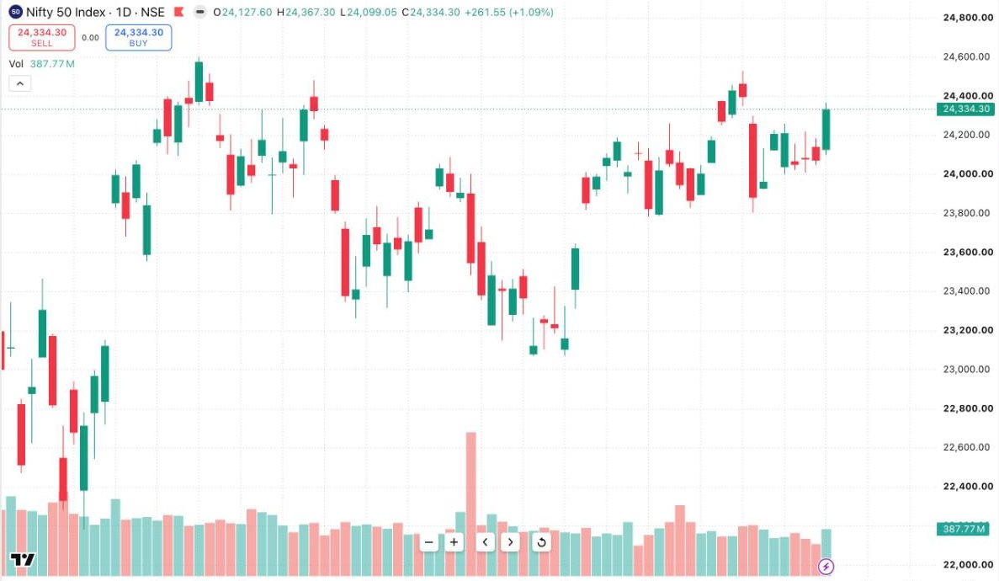

Reading a Candlestick Chart Properly
Most beginners learn candlesticks as a vocabulary test — memorise thirty pattern names, spot them on charts, take trades. Then they lose money and conclude candlesticks "don't work". The problem was never the candles. It was reading them as symbols instead of as records of a battle.
What one candle actually tells you
A candle records four facts for its time period: where price opened, the highest price paid, the lowest price accepted, and where it closed. That's it. But those four numbers describe a fight:
- The body (open to close) shows who won the period — and by how much.
- The wicks show where one side tried to push and got rejected. A long upper wick means buyers drove price up and sellers slammed it back. Someone's attempt failed — and failed attempts are information.
- The close is the most important single number: it's the price the market accepted as fair when time ran out. A close near the high says buyers were still in control at the bell.
Read this way, you don't need pattern names. A "hammer" is just a period where sellers pushed hard, failed completely, and buyers closed price back near the top. Whether that matters depends entirely on where it happened.
Context beats pattern — always
The identical candle means opposite things in different places. A strong rejection wick at a level where price has reversed twice before, after a long decline, is worth attention. The same wick in the middle of a choppy range means nothing — it's noise from the ongoing argument. This is the single biggest upgrade a beginner can make: stop asking "what is this pattern?" and start asking "where is this happening?"
The three questions that make any chart readable
- Where is price coming from? Zoom out. Has it been trending for days, or stuck in a range? A chart only makes sense as a story with a past.
- Where is it now? Is price at a level where something previously happened — an old high, a zone of repeated reversals, yesterday's close? Decisions cluster at memorable prices.
- Who just failed? Find the most recent strong push that got rejected. Trapped traders on the wrong side become fuel for the next move — their exits are someone else's entries.
BODY → who won the period, and how decisively?
WICKS → whose attempt was rejected?
CLOSE → who was in control when time expired?
THEN → does the location make this fight meaningful?

Timeframes: one market, many magnifications
A daily candle contains an entire day's battle; a 5-minute chart shows the same battle under a microscope. Neither is "more true". Professionals typically read the higher timeframe for context (where are we in the story?) and a lower timeframe for execution (where exactly do I act?). As a beginner, start with daily charts only — the noise is smaller, the stories are cleaner, and you have all evening to think without a ticking clock.
Multi-candle stories — without the pattern dictionary
Once you can read one candle as a fight, sequences of candles become sentences. You do not need thirty names; you need four recurring stories:
- Absorption: a strong push arrives at a level, and the next candles shrink — big bodies become small bodies with wicks. Someone is quietly taking everything the aggressors sell or buy. The move stalls not because interest died, but because it met a bigger counterparty.
- Rejection and engulf: one side pushes to a new extreme, fails, and the next candle's body completely covers the previous one in the opposite direction. Translation: the winners of the last period were overwhelmed within a single period — the fastest kind of control change.
- Compression: candles get smaller and ranges overlap (inside bars) as both sides withdraw ahead of a decision — often before news, often before a breakout. Compression is the market holding its breath; the expansion that follows is usually meaningful.
- Trend health: in a strong trend, pullback candles are small-bodied and the with-trend candles are large-bodied closing near their extremes. When that ratio flips — big counter-candles, weak continuation candles — the trend is aging even before structure breaks.
1. Pick the last 20 daily candles of any liquid stock
2. Mark every candle whose body is 2× the recent average — who won those days?
3. Mark every long wick — where were attempts rejected?
4. Write ONE sentence: "control belongs to ____ until price crosses ____"
If you can write that sentence, you can read a chart.
Volume: the lie detector for candles
A candle tells you what price did; volume tells you how much conviction was behind it. Three combinations carry most of the information: a big move on big volume is real participation — respect it. A big move on thin volume is price drifting through an empty auction — it reverses easily. And a huge volume spike with a small-bodied candle is the most interesting of all: enormous business was transacted but price barely moved, which means someone absorbed the entire push. Mark that level; you will often see the market remember it for weeks.
COMMON MISTAKES AT THIS STAGE
- Trading a "perfect" candle pattern in the middle of nowhere. Location first, pattern second — always.
- Reading candles on 1-minute charts as a beginner: at that magnification, most candles are noise from single orders, not stories.
- Ignoring the close. A dramatic intraday wick that still closes strong is a very different fact from one that closes weak.
- Collecting more patterns instead of re-reading the same chart until the narrative is obvious. Depth beats vocabulary.
KEY TAKEAWAYS
- A candle is a record of a fight: body = winner, wicks = failed attempts, close = final control.
- Identical candles mean different things in different locations — context decides everything.
- Ask: where is price coming from, where is it now, who just failed?
- Begin on daily charts; add lower timeframes only when the story-reading is second nature.
PRACTICE THIS WEEK
Take any daily chart and pick five candles at random. For each, write the fight in one line — "sellers tried below yesterday's low, failed, buyers closed strong" — without using any pattern name. If you can narrate a chart, you can read one.
Learn chart reading live, on real markets
Market Foundations covers candles, levels and your first trading plan — with live doubt-clearing sessions.
Request Program Details